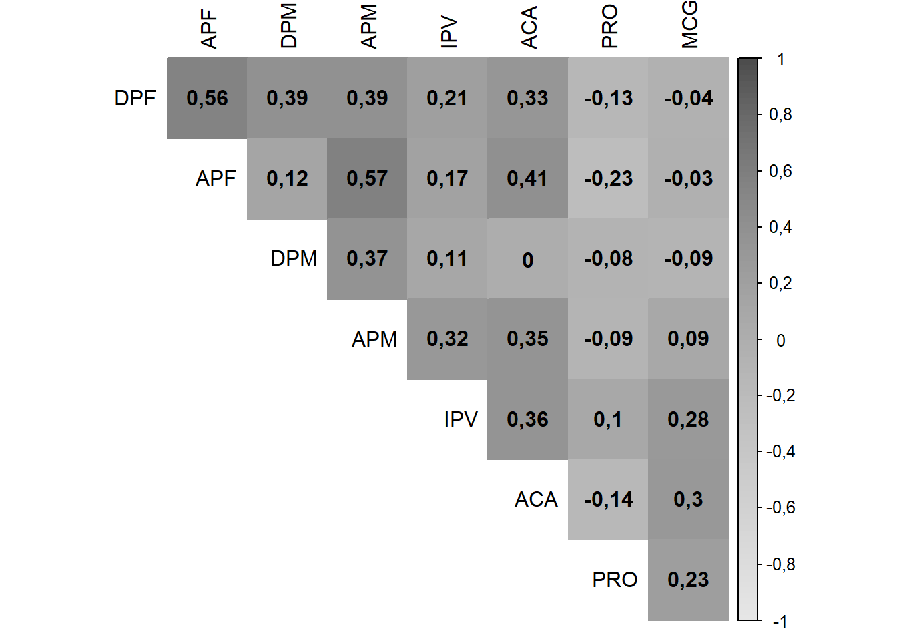
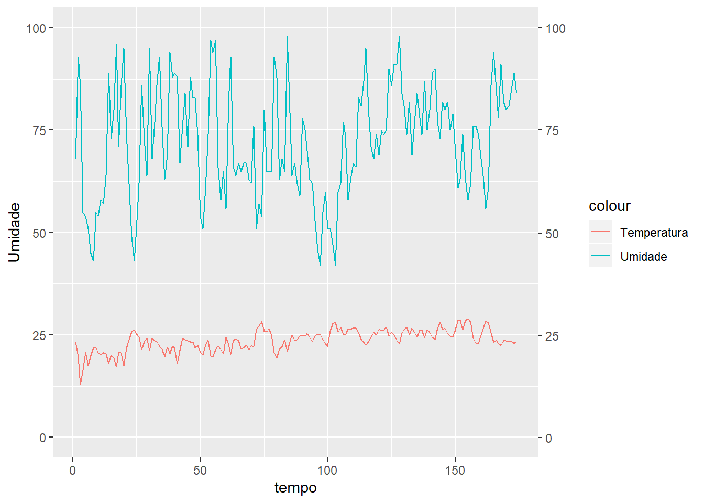
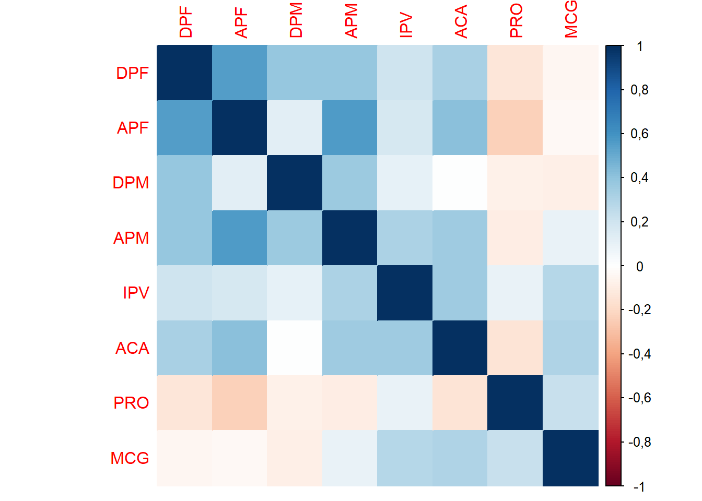

Chapter 22 Correlação
A Matriz de Correlação possibilita a análise simultânea da associação entre variáveis, através do coeficiente de Pearson.
Coeficiente de Pearson
\[\rho = \dfrac{\sum_{i=1}^{n}(x_i-\bar{x})(y_i-\bar{y})}{\sqrt{\sum_{i=1}^n(x_i-\bar{x})^2}\sqrt{\sum_{i=1}^{n}(y_i-\bar{y})^2}}\]
22.0.1 Conjunto de dados
Variáveis:
- DPF: Dias para florescimento
- APF: Altura da planta no florescimento (cm)
- DPM: Dias para maturação
- APM: Altura da planta na maturação (cm)
- IPV: Inserção primeira vagem (cm)
- ACA: Acamamento
- PRO: Produtiviade de grãos em \(Kg\) \(ha^-1\)
- MCG: Massa de cem grãos (g)
DPF=c(46.00,46.00,46.00,46.00,46.00,46.00,43.00,43.00,43.00,46.00,43.00,43.00,46.00,46.00,46.00,49.00,50.00,46.00,43.00,43.00,46.00,43.00,46.00,43.00,39.00,39.00,43.00,43.00,42.00,45.00,43.00,46.00,46.00,43.00,43.00,43.00,43.00,46.00,43.00,49.00,50.00,43.00,39.00,39.00,39.00)
APF=c(58.33,55.00,50.00,41.00,35.67,43.33,35.67,36.00,35.33,46.67,36.67,49.00,38.33,43.67,44.33,41.00,48.00,43.67,32.67,28.67,36.67,38.33,46.33,53.33,38.00,33.00,32.67,45.67,48.33,46.67,33.67,36.67,42.67,37.00,43.67,35.33,42.33,47.00,47.00,59.67,59.00,48.33,32.33,36.33,33.33)
DPM=c(105.00,105.00,102.00,110.00,110.00,112.00,110.00,110.00,105.00,112.00,112.00,110.00,110.00,112.00,112.00,112.00,112.00,112.00,110.00,105.00,105.00,110.00,102.00,102.00,110.00,105.00,110.00,110.00,110.00,104.00,105.00,105.00,104.00,104.00,104.00,102.00,104.00,105.00,102.00,110.00,112.00,112.00,102.00,102.00,102.00)
APM=c(100.00,90.33,97.00,91.33,97.67,77.33,90.00,93.00,91.33,98.00,84.67,91.33,92.33,101.67,102.33,102.33,98.33,93.00,78.67,72.33,72.33,97.67,104.33,96.00,99.00,97.00,94.33,104.67,115.00,117.67,81.33,82.33,83.00,104.33,107.33,103.00,89.33,90.33,82.33,123.33,115.00,133.33,60.00,59.00,65.67)
IPV=c(15.00,20.00,17.00,10.00,22.67,14.33,23.00,19.33,15.33,14.33,15.00,22.67,14.67,15.33,17.00,13.67,16.67,19.33,11.00,8.67,11.33,13.00,14.67,13.00,13.00,12.00,17.67,14.67,10.67,25.00,18.00,14.00,18.67,15.67,11.00,18.00,16.33,24.33,17.00,13.33,11.00,22.33,10.33,5.67,14.00)
ACA=c(2.00,1.90,2.20,1.50,1.20,1.00,2.00,1.50,1.20,3.00,1.40,1.60,1.80,2.50,2.50,2.00,1.70,1.80,1.50,2.00,1.50,1.80,2.00,1.80,1.30,1.20,2.00,3.00,2.00,3.00,1.50,1.80,2.20,1.80,1.80,2.00,1.80,3.50,3.50,1.50,2.50,2.00,1.20,1.00,1.20)
PRO=c(2444.44,2870.37,2314.81,2629.63,2444.44,2592.59,2962.96,3037.04,3037.04,2592.59,2296.30,2444.44,2370.37,3481.48,2555.56,1981.48,2611.11,1925.93,1870.37,2518.52,2370.37,2462.96,2351.85,2000.00,2703.70,2685.19,2166.67,2129.63,2222.22,1814.81,2537.04,2351.85,2333.33,3370.37,2462.96,3129.63,2666.67,2796.30,2055.56,2333.33,2240.74,2092.59,2703.70,2129.63,2740.74)
MCG=c(10.78,10.96,10.07,10.77,11.17,11.24,12.57,13.35,13.77,14.23,13.61,13.30,11.85,11.80,12.04,10.10,10.19,9.97,12.15,11.35,11.70,12.83,11.52,11.10,10.95,11.14,10.26,12.51,11.87,12.30,14.20,13.13,14.70,13.08,12.76,13.74,14.59,13.98,13.52,12.72,12.22,12.63,10.93,10.65,10.67)
dados=data.frame(DPF,APF,DPM,APM,IPV,ACA,PRO,MCG)22.0.2 Matriz de correlação
## DPF APF DPM APM IPV ACA PRO MCG
## DPF 1,00 0,56 0,39 0,39 0,21 0,33 -0,13 -0,04
## APF 0,56 1,00 0,12 0,57 0,17 0,41 -0,23 -0,03
## DPM 0,39 0,12 1,00 0,37 0,11 0,00 -0,08 -0,09
## APM 0,39 0,57 0,37 1,00 0,32 0,35 -0,09 0,09
## IPV 0,21 0,17 0,11 0,32 1,00 0,36 0,10 0,28
## ACA 0,33 0,41 0,00 0,35 0,36 1,00 -0,14 0,30Instalar pacote corrplot


22.0.8 Quadrado preenchido, número e sem a diagonal

22.0.9 Escala cinza
corrplot(M, method="color",
type="upper", col=gray.colors(100)[100:1],
addCoef.col = "black", insig = "blank", diag=FALSE)
22.0.10 Cor da legenda
corrplot(M, method="color", tl.col="black",
type="upper", col=gray.colors(100)[100:1],
addCoef.col = "black", insig = "blank", diag=FALSE )
22.0.11 Modificando a fonte
par(family="serif")
corrplot(M, method="color", tl.col="black",
type="upper", col=gray.colors(100)[100:1],
addCoef.col = "black", insig = "blank", diag=FALSE )
22.0.12 Cor do valor da correlação
par(family="serif")
corrplot(M, method="color", tl.col="black",
type="upper", col=gray.colors(100)[100:1],
addCoef.col = "green", insig = "blank", diag=FALSE
)
22.1 Matriz de Correlação
22.1.1 Conjunto de dados
DPF=c(46.00,46.00,46.00,46.00,46.00,46.00,43.00,43.00,43.00,46.00,43.00,43.00,46.00,46.00,46.00,49.00,50.00,46.00,43.00,43.00,46.00,43.00,46.00,43.00,39.00,39.00,43.00,43.00,42.00,45.00,43.00,46.00,46.00,43.00,43.00,43.00,43.00,46.00,43.00,49.00,50.00,43.00,39.00,39.00,39.00)
APF=c(58.33,55.00,50.00,41.00,35.67,43.33,35.67,36.00,35.33,46.67,36.67,49.00,38.33,43.67,44.33,41.00,48.00,43.67,32.67,28.67,36.67,38.33,46.33,53.33,38.00,33.00,32.67,45.67,48.33,46.67,33.67,36.67,42.67,37.00,43.67,35.33,42.33,47.00,47.00,59.67,59.00,48.33,32.33,36.33,33.33)
DPM=c(105.00,105.00,102.00,110.00,110.00,112.00,110.00,110.00,105.00,112.00,112.00,110.00,110.00,112.00,112.00,112.00,112.00,112.00,110.00,105.00,105.00,110.00,
102.00,102.00,110.00,105.00,110.00,110.00,110.00,104.00,105.00,105.00,104.00,104.00,104.00,102.00,104.00,105.00,102.00,110.00,112.00,112.00,102.00,102.00,102.00)
APM=c(100.00,90.33,97.00,91.33,97.67,77.33,90.00,93.00,91.33,98.00,84.67,91.33,92.33,101.67,102.33,102.33,98.33,93.00,78.67,72.33,72.33,97.67,104.33,96.00,99.00,97.00,94.33,104.67,115.00,117.67,81.33,82.33,83.00,104.33,107.33,103.00,89.33,90.33,82.33,123.33,115.00,133.33,60.00,59.00,65.67)
IPV=c(15.00,20.00,17.00,10.00,22.67,14.33,23.00,19.33,15.33,14.33,15.00,22.67,14.67,15.33,17.00,13.67,16.67,19.33,11.00,8.67,11.33,13.00,14.67,13.00,13.00,12.00,17.67,14.67,10.67,25.00,18.00,14.00,18.67,15.67,11.00,18.00,16.33,24.33,17.00,13.33,11.00,22.33,10.33,5.67,14.00)
ACA=c(2.00,1.90,2.20,1.50,1.20,1.00,2.00,1.50,1.20,3.00,1.40,1.60,1.80,2.50,2.50,2.00,1.70,1.80,1.50,2.00,1.50,1.80,2.00,1.80,1.30,1.20,2.00,3.00,2.00,3.00,1.50,1.80,2.20,1.80,1.80,2.00,1.80,3.50,3.50,1.50,2.50,2.00,1.20,1.00,1.20)
PRO=c(2444.44,2870.37,2314.81,2629.63,2444.44,2592.59,2962.96,3037.04,3037.04,2592.59,2296.30,2444.44,2370.37,3481.48,2555.56,1981.48,2611.11,1925.93,1870.37,2518.52,2370.37,2462.96,2351.85,2000.00,2703.70,2685.19,2166.67,2129.63,2222.22,1814.81,2537.04,2351.85,2333.33,3370.37,2462.96,3129.63,2666.67,2796.30,2055.56,2333.33,2240.74,2092.59,2703.70,2129.63,2740.74)
MCG=c(10.78,10.96,10.07,10.77,11.17,11.24,12.57,13.35,13.77,14.23,13.61,13.30,11.85,11.80,12.04,10.10,10.19,9.97,12.15,11.35,11.70,12.83,11.52,11.10,10.95,11.14,10.26,12.51,11.87,12.30,14.20,13.13,14.70,13.08,12.76,13.74,14.59,13.98,13.52,12.72,12.22,12.63,10.93,10.65,10.67)22.1.4 Construindo o Gráfico
Instalar pacote (PerformanceAnalytics)

22.1.5 Conjunto de dados
ph=c(5.4,6.7,6.8,5.9,6.3,6.2,6.3,6,6.1,5.8,6.7,5.7,6.8,6.9,6.5,6.9,6.8,6.7,6.5,6.5,6.7,6.7,6.5,6.7,6.6,6.8,6.4,4.6,6.5,6.6,6.3,6.2,5.5,4.5,5.2,6.5,6.3,6.6,6.4,6.6,6.6,6.5,6.5,6.4,6.5,6.8,6.7,6.6,5.9,6.1,6.3,6.3,6.2,5.3,5.8,6.1,6.7,6.7,6.6,6.6,6.6,6.8,6.8,6.7,6.9,7,7.1,7.1,6.7,6.7,6.6,6.6,6.3,5.8,6.2,6.3,6,5,6.3,5.3,5.4,6.4,6.7,6.5,6.5,6.4,6.7,6.5,6.8,6.2,6.1,6.2,6.8,6.7,6.6,6.4,6.7,6.6,6.4,5.9,6.5,6.6,5.9,6.8,6.8,6.7,6.5,6.7,6.9,6.5,6.8,6.7,6.8,6.6,6.7,6.7,6.9,6.9,6.7,6.8)
HAL=c(4.6,2.7,2.7,3.9,3.4,3.6,3.4,3.9,3.6,3.9,2.5,4.2,2.5,2.5,3.1,2.5,2.5,2.9,3.1,3.1,2.7,2.9,2.9,2.9,3.1,2.7,3.4,8.3,2.9,2.9,3.6,3.1,4.9,8.3,5.3,3.1,2.7,2.7,2.7,2.7,3.1,3.1,2.7,3.1,2.5,2.5,2.9,2.9,3.9,3.9,3.6,3.4,3.9,5.3,3.9,3.9,2.9,2.7,2.9,3.1,2.7,2.1,2.3,2.3,2.3,2.1,2.0,2.1,2.5,2.3,2.5,2.5,3.1,3.6,2.9,2.9,3.4,4.9,2.5,4.6,4.2,2.5,2.3,2.5,2.7,2.5,2.1,2.5,2.1,2.9,2.9,2.9,2.1,2.3,2.5,2.7,2.5,2.5,2.7,3.6,2.7,2.5,3.4,2.0,2.3,2.3,2.7,2.3,2.1,2.5,2.1,2.3,2.3,2.5,2.5,2.3,2.1,2.3,2.3,2.1)
K=c(0.5,0.7,0.7,0.9,0.9,0.8,0.6,0.9,0.8,0.6,0.5,0.4,2.0,1.9,1.0,1.2,1.2,1.6,1.5,0.9,2.0,1.2,1.6,1.4,0.9,0.8,0.8,1.0,0.9,1.1,1.2,1.1,0.6,0.5,0.6,0.9,1.4,1.6,1.3,1.5,0.9,1.2,1.3,1.0,1.4,0.7,0.7,1.0,1.0,0.7,0.8,1.3,0.7,0.7,0.8,0.8,1.3,0.9,1.2,0.8,1.5,1.4,0.8,1.0,1.4,1.1,1.6,1.0,0.9,1.1,1.1,0.9,1.0,0.7,0.6,1.0,1.0,0.7,1.0,0.6,0.9,1.2,0.8,0.8,0.8,0.7,1.1,1.2,0.8,0.9,0.9,1.2,1.1,1.1,1.2,0.9,0.8,0.7,0.9,0.7,0.8,0.9,0.5,0.8,1.0,0.7,0.8,0.7,1.4,0.9,1.4,0.9,1.0,1.3,0.7,1.3,1.4,0.9,0.8,1.4)
P=c(13.7,14.5,65.7,20.5,20.7,19.3,16.2,14.6,15.8,8.7,8.9,7.7,20.0,18.4,9.4,14.8,17.5,11.7,11.2,11.1,51.4,20.4,27.3,14.1,20.1,18.1,23.5,36.4,16.9,18.6,29.0,20.9,16.8,16.8,8.6,11.3,17.5,17.0,30.9,17.2,10.7,17.2,10.9,14.5,26.6,42.1,10.5,13.5,16.4,13.3,34.7,20.0,12.8,15.1,15.8,14.1,26.9,33.2,25.4,25.1,14.1,17.7,12.6,12.9,27.5,18.6,16.9,15.5,16.2,17.6,17.5,14.5,12.6,10.5,10.6,10.5,14.7,10.1,10.7,9.6,17.9,23.9,22.4,22.0,14.2,15.8,12.8,17.8,16.0,10.5,9.6,13.8,17.5,17.7,10.0,10.1,29.0,16.8,18.6,31.7,17.2,40.2,9.8,14.5,28.8,13.0,13.1,18.6,22.0,36.0,19.5,25.2,14.2,15.8,11.9,16.7,20.0,14.7,11.7,17.9)
Ca=c(3.43,4.24,5.37,4.13,4.48,4.65,4.33,4.19,3.91,3.23,4.01,2.98,4.55,4.53,3.91,4.33,4.62,4.54,3.38,3.87,3.85,3.91,3.79,4.57,4.71,4.75,4.93,4.32,4.08,3.73,3.30,3.88,2.59,1.99,2.27,3.68,4.94,5.29,5.69,5.67,4.55,5.01,4.85,4.76,4.99,5.13,4.40,4.38,3.05,3.78,4.21,4.22,3.55,2.81,2.98,3.35,4.03,3.80,3.88,3.97,4.32,4.81,5.06,4.98,5.46,4.88,5.37,5.36,5.41,5.05,5.22,4.95,6.06,3.51,3.72,3.25,2.74,1.78,2.86,2.31,3.63,4.91,4.47,4.85,4.78,6.76,4.31,4.62,4.54,3.10,2.88,3.66,5.56,5.08,4.89,4.67,5.71,5.47,4.68,4.72,4.45,4.23,3.36,4.27,4.31,3.48,3.42,4.38,5.37,7.21,5.40,5.71,4.53,4.35,3.87,3.68,4.18,4.95,4.40,4.84)
Mg=c(2.24,3.22,3.20,2.46,2.51,2.65,2.84,2.80,2.56,2.56,3.45,2.43,3.17,3.25,2.89,3.30,3.34,3.28,2.91,3.00,3.29,2.83,2.89,2.86,2.82,3.15,2.49,2.65,2.95,3.20,2.88,3.10,2.28,1.92,2.05,3.18,3.19,3.13,3.35,3.44,3.27,3.18,3.35,3.24,3.29,3.37,3.21,3.19,2.50,2.01,2.61,2.74,2.42,2.05,2.29,2.36,3.33,3.30,3.03,2.90,2.99,3.34,3.33,3.35,3.30,3.10,3.47,3.30,3.30,3.23,3.25,3.23,3.49,2.40,2.70,2.83,2.78,1.98,2.89,2.30,2.35,3.20,3.45,2.74,2.97,4.56,3.28,2.80,3.03,2.79,2.68,2.95,3.43,3.38,3.30,3.13,3.25,3.06,2.99,2.49,2.84,2.81,2.22,3.48,3.08,2.80,2.62,2.79,3.30,3.39,3.23,3.14,3.31,2.94,3.03,3.17,2.98,3.38,3.13,3.21)
V=c(57.27,75.06,77.30,65.31,69.75,68.82,69.49,66.52,66.47,61.75,75.94,57.72,79.32,79.29,71.24,77.71,78.33,76.18,71.19,71.14,76.94,72.96,73.78,75.10,72.70,76.02,70.72,48.85,73.04,73.25,66.68,71.78,52.34,34.52,48.24,70.98,77.75,78.59,79.11,79.57,73.40,74.76,77.59,73.97,79.17,78.45,73.85,74.40,62.52,62.12,67.51,70.86,62.69,51.35,60.67,62.34,74.62,74.63,73.41,70.85,76.35,81.43,79.59,79.78,81.17,80.69,83.74,81.62,79.09,79.87,79.09,78.23,76.80,64.16,70.53,70.54,65.82,47.34,72.73,53.10,61.80,78.52,78.78,76.85,75.73,82.58,80.00,77.24,79.24,69.95,68.90,72.68,82.19,80.29,78.75,76.06,79.42,78.49,75.87,68.39,74.74,75.88,64.04,80.92,78.00,74.94,71.55,76.95,82.11,81.94,82.16,80.58,78.89,77.11,75.13,77.63,79.68,79.73,77.91,81.24)
dados=data.frame(ph,HAL,K,P,Ca,Mg,V)

22.2 Rede de correlação
22.2.1 Conjunto de dados
DPF=c(46.00,46.00,46.00,46.00,46.00,46.00,43.00,43.00,43.00,46.00,43.00,43.00,46.00,46.00,46.00,49.00,50.00,46.00,43.00,43.00,46.00,43.00,46.00,43.00,39.00,39.00,43.00,43.00,42.00,45.00,43.00,46.00,46.00,43.00,43.00,43.00,43.00,46.00,43.00,49.00,50.00,43.00,39.00,39.00,39.00)
APF=c(58.33,55.00,50.00,41.00,35.67,43.33,35.67,36.00,35.33,46.67,36.67,49.00,38.33,43.67,44.33,41.00,48.00,43.67,32.67,28.67,36.67,38.33,46.33,53.33,38.00,33.00,32.67,45.67,48.33,46.67,33.67,36.67,42.67,37.00,43.67,35.33,42.33,47.00,47.00,59.67,59.00,48.33,32.33,36.33,33.33)
DPM=c(105.00,105.00,102.00,110.00,110.00,112.00,110.00,110.00,105.00,112.00,112.00,110.00,110.00,112.00,112.00,112.00,112.00,112.00,110.00,105.00,105.00,110.00,102.00,102.00,110.00,105.00,110.00,110.00,110.00,104.00,105.00,105.00,104.00,104.00,104.00,102.00,104.00,105.00,102.00,110.00,112.00,112.00,102.00,102.00,102.00)
APM=c(100.00,90.33,97.00,91.33,97.67,77.33,90.00,93.00,91.33,98.00,84.67,91.33,92.33,101.67,102.33,102.33,98.33,93.00,78.67,72.33,72.33,97.67,104.33,96.00,99.00,97.00,94.33,104.67,115.00,117.67,81.33,82.33,83.00,104.33,107.33,103.00,89.33,90.33,82.33,123.33,115.00,133.33,60.00,59.00,65.67)
IPV=c(15.00,20.00,17.00,10.00,22.67,14.33,23.00,19.33,15.33,14.33,15.00,22.67,14.67,15.33,17.00,13.67,16.67,19.33,11.00,8.67,11.33,13.00,14.67,13.00,13.00,12.00,17.67,14.67,10.67,25.00,18.00,14.00,18.67,15.67,11.00,18.00,16.33,24.33,17.00,13.33,11.00,22.33,10.33,5.67,14.00)
ACA=c(2.00,1.90,2.20,1.50,1.20,1.00,2.00,1.50,1.20,3.00,1.40,1.60,1.80,2.50,2.50,2.00,1.70,1.80,1.50,2.00,1.50,1.80,2.00,1.80,1.30,1.20,2.00,3.00,2.00,3.00,1.50,1.80,2.20,1.80,1.80,2.00,1.80,3.50,3.50,1.50,2.50,2.00,1.20,1.00,1.20)
PRO=c(2444.44,2870.37,2314.81,2629.63,2444.44,2592.59,2962.96,3037.04,3037.04,2592.59,2296.30,2444.44,2370.37,3481.48,2555.56,1981.48,2611.11,1925.93,1870.37,2518.52,2370.37,2462.96,2351.85,2000.00,2703.70,2685.19,2166.67,2129.63,2222.22,1814.81,2537.04,2351.85,2333.33,3370.37,2462.96,3129.63,2666.67,2796.30,2055.56,2333.33,2240.74,2092.59,2703.70,2129.63,2740.74)
MCG=c(10.78,10.96,10.07,10.77,11.17,11.24,12.57,13.35,13.77,14.23,13.61,13.30,11.85,11.80,12.04,10.10,10.19,9.97,12.15,11.35,11.70,12.83,11.52,11.10,10.95,11.14,10.26,12.51,11.87,12.30,14.20,13.13,14.70,13.08,12.76,13.74,14.59,13.98,13.52,12.72,12.22,12.63,10.93,10.65,10.67)22.2.4 Construindo o Gráfico
Instalar pacote (qgraph)
## Error : invalid version specification '1,5'